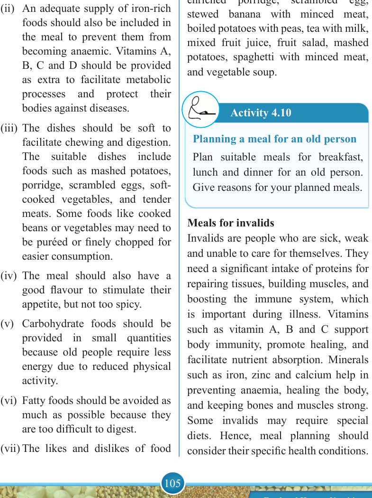

105


Food and Human Nutrition

Form Two
(i) The meal must be balanced with an adequate supply of animal protein for repairing worn-out tissues. Dishes with mineral salts such as calcium and phosphorus should be significantly added for strengthening teeth and bones.
(ii) An adequate supply of iron-rich foods should also be included in the meal to prevent them from becoming anaemic. Vitamins A,
B, C and D should be provided as extra to facilitate metabolic processes
and
protect
their
bodies against diseases.
(iii) The dishes should be soft to facilitate chewing and digestion.
The suitable dishes include foods such as mashed potatoes, porridge, scrambled eggs, soft- cooked vegetables, and tender meats. Some foods like cooked beans or vegetables may need to be puréed or finely chopped for easier consumption.
(iv) The meal should also have a good flavour to stimulate their appetite, but not too spicy.
(v) Carbohydrate foods should be provided in small quantities because old people require less energy due to reduced physical activity.
(vi) Fatty foods should be avoided as much as possible because they are too difficult to digest.
(vii) The likes and dislikes of food
should be considered as they will affect food intake.
Suggested suitable dishes for old people
Steamed fish, boiled vegetables, boiled rice, carrot rice, braised liver, braised chicken, shepherd’s pie, pancakes, enriched porridge, scrambled egg, stewed banana with minced meat, boiled potatoes with peas, tea with milk, mixed fruit juice, fruit salad, mashed potatoes, spaghetti with minced meat, and vegetable soup.
Activity 4.10
Planning a meal for an old person
Plan suitable meals for breakfast, lunch and dinner for an old person.
Give reasons for your planned meals.
Meals for invalids
Invalids are people who are sick, weak and unable to care for themselves. They need a significant intake of proteins for repairing tissues, building muscles, and boosting the immune system, which is important during illness. Vitamins such as vitamin A, B and C support body immunity, promote healing, and facilitate nutrient absorption. Minerals such as iron, zinc and calcium help in preventing anaemia, healing the body, and keeping bones and muscles strong.
Some invalids may require special diets. Hence, meal planning should consider their specific health conditions.
17/09/2025 16:30